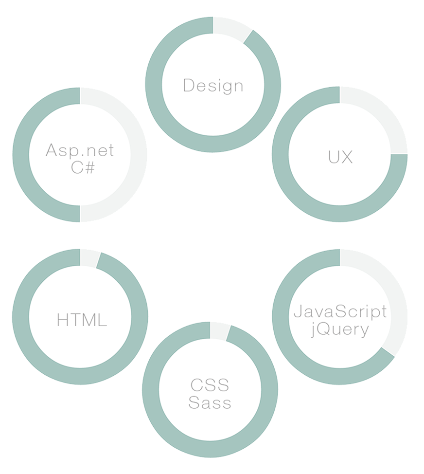
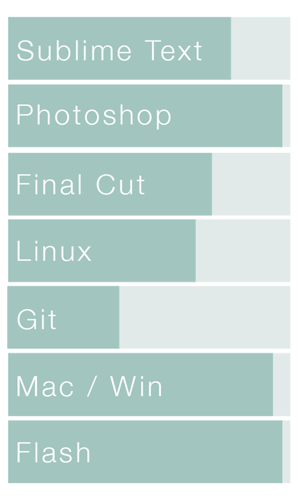
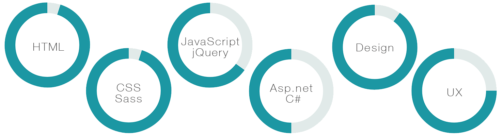

Alex Bezuska
I am a web designer, developer, and indie game illustrator with a passion for when art and technology work together for a purpose. A transplant to Louisville from Orange County, CA, I have discovered the extraordinary beauty of all four seasons and life without a great deal of traffic.
I believe that web design is much more than a coat of paint. Design and user experience must create a seamless flow from the creator to the user in order to clearly convey the website's message. I am excited about working in an environment that understands the importance and advantages of technology and encourages their team to learn and experiment with new web practices.
Please take some time to check out my work, learn about my passions, and feel free to contact me with any additional questions.


Work Experience
Web Developer | cafepress
May 2014 - PresentI started my career at cafepress on a small "labs" team focussed on creating new and exciting products and the web experiences to get those products in front of customers. Since then I have moved to the front end team on the main cafepress website, where I manage pages seen by tens of thousands of users a day. I primarily work in JavaScript, HTML and CSS.
Front End Web Developer | Mortenson Dental Partners
April 2013 - May 2014I designed and developed internal use web apps and internal/external websites. While I specialized in the design and UI/UX of each project, I also gained a lot of usefull experience with C#, SQL server. I was the UX watchdog on the team, and faught for the users in any way I could.
Independent Web Designer | Alexbezuska.com
January 2008 - April 2013Worked one-on-one with clients to bring their vision and purpose to life on each custom website. To do this I worked to balance the end user’s needs and the client’s requests.
Personal Experience
Creator/Designer/Artist | Two Scoop Games
November 2013 - PresentTo keep my skills current and to sustain my passion for design and programming, a friend and I develop HTML5/JavaScript games. We have currently completed nine projects, all of which are cross-platform, three of which are on the iOS app store. We also take on contract game development work for businesses and organizations. In doing this I am able to combine my passions for art and technology to create games for all to enjoy.
Organizer/Host | Game Dev lou
Feburary 2014 - PresentThe independant game developer community in Louisville is a huge passion of mine. I organize meetings, events, game jams (think hack-a-thons), and much more. Our group is currently in the process of acquiring it's own building and providing an education program for kids and co-working space for the community.
Founder/Organizer/Host | JSLou
August 2013 - PresentIn order to grow and challenge myself as a developer I have started and sustained JSLou, a local group focused on all things JavaScript. I have learned a great deal from the many experienced developers I have met through JSLou. I enjoy facilitating an environment where others can learn and expand their skills.
Skills
Software
Skills
Software

Connect
abezuska@gmail.com
abezuska@gmail.com
Email Address
714 423 7411
Phone Number
@alexbezuska
Twitter Handle